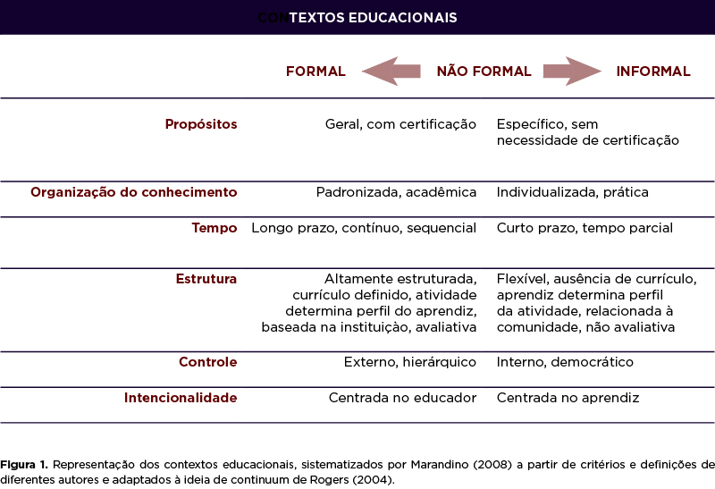

1. As instituições culturais e a sociedade
1.2. Educação
A educação é um fenômeno social e universal, necessário para a existência e o funcionamento de toda a sociedade, que cuida da formação dos seus indivíduos, auxiliando-os no desenvolvimento de suas capacidades físicas e habilidades mentais. Não há sociedade sem prática educativa nem prática educativa sem sociedade. A prática educativa não é apenas uma exigência da vida em sociedade, mas também o processo de prover os indivíduos dos conhecimentos e experiências culturais que os tornam aptos a atuar no meio social e a transformá-los em função de necessidades econômicas, sociais e políticas da coletividade (LIBÂNEO, 1994).
A educação, enquanto forma de ensino-aprendizagem, é adquirida ao longo da vida dos cidadãos e, de acordo com um levantamento feito por Marandino (2008), pode ser dividida, de forma geral, em três diferentes formas: (1) educação formal, (2) educação informal e (3) educação não formal. A primeira pode ser entendida como aquela desenvolvida nas escolas e universidades, cujo sistema é organizado hierarquicamente, com conteúdos distribuídos em um cronograma a ser seguido e esgotado em um tempo limite, de acordo com um planejamento regido por legislações e normas gerais, sejam elas municipais, estaduais e/ou nacionais.
A segunda forma abrange as experiências geralmente associadas ao âmbito da família, do trabalho e das mídias, entre outros. Ela se dá num processo totalmente espontâneo a partir das relações do cotidiano, fundamentalmente não planejado e não intencional.
A terceira e última forma situa-se em um estágio intermediário entre as duas anteriores. A educação não formal é concebida segundo uma organização fora do sistema escolar, mas que busca atingir objetivos educacionais definidos no âmbito de seu planejamento, assim como a educação formal, no entanto, sem a obrigatoriedade de seguir um currículo e um cronograma pré-definido por legislação.
Muitas vezes os termos formal, não-formal e informal são utilizados com concepções invertidas, ou seja, o que é considerado como não-formal por um é denominado de informal por outro (MARANDINO, 2008) e, além disso, essas diferenças também podem ser percebidas na literatura de acordo com escolas de pesquisas. A autora baseou-se nas diferentes e variadas definições apresentadas para essas três categorias de educação levando em conta a ideia de continuum de Rogers (2004), conforme a representação abaixo (Figura 1):
{kind=link}
Representação dos contextos educacionais, sistematizados por Marandino (2008)
Por ter propósitos definidos, métodos e organização flexíveis, a educação não-formal se destaca a partir do final dos anos 1960 do século XX. Sua flexibilidade lhe confere maior liberdade de adaptação frente às mudanças socioeconômicas, voltando seu foco para as necessidades de grupos em desvantagens. Do outro lado, o sistema de educação formal, que apresentava e ainda apresenta lenta adaptação às novas demandas sociais, exigiu/exige que diferentes setores da sociedade se articulem para enfrentar tais problemas e suprir as demandas educacionais (MARANDINO, 2008).
Página 94Essa categoria de educação pode ser realizada por meio de exposições, cursos de formação (oficinas e workshops), atividades de educação patrimonial, palestras, ou até mesmo pelo acesso às informações em instituições em geral, como em bibliotecas e arquivos, e também pelas trocas de experiências e memórias, como em pontos de cultura e de memória, entre outros, que serão aqui analisados.
Educação Patrimonial:
De forma geral, para o Iphan, a Educação Patrimonial se constitui na reunião de pessoas para a construção e divisão coletiva de conhecimentos e na ação conjunta para conhecer, entender e transformar a realidade em vivemos, a partir da relação com o patrimônio cultural ou algo que esteja ligado a ele. Considera, num amplo espectro de ações, qualquer processo educativo formal e não-formal realizado por meio de diálogo permanente entre os agentes culturais e sociais e as comunidades detentoras e produtoras das referências culturais (IPHAN, 2014).
A partir dessa definição, podemos elencar três problemáticas que podem ser investigadas como atividades complementares à disciplina:
- A atual concepção do termo nos permite perceber que essa modalidade de educação também se encontra permeada pelas relações de poder (CHAGAS, 2004; MORAES WICHERS, 2011), como as instituições aqui tratadas, pois se coloca numa posição central em uma rede de interesses de poder e de representação;
- A definição também apresenta um dos dilemas da Educação Patrimonial: o pleonasmo presente no termo, destacado por Silveira e Bezerra (2007). Segundo as autoras, a educação dentro de uma perspectiva que aposta na cultura como princípio norteador não é exclusiva dessa metodologia. Essa concepção já está presente nos princípios da escola “freiriana”, em que a cultura material se torna essencial no processo de alfabetização cultural, que é a base de sua teoria e de sua experiência;
- A educação patrimonial é compreendida somente no âmbito do Iphan, a partir dos trabalhos da Gerência de Projetos e Educação Patrimonial (GEDUC). Ela não é mencionada pela Coordenação de Museologia Social e Educação (COMUSE) do Ibram entre as diversas ações relacionadas à comunicação do patrimônio musealizado.
Saiba mais sobre Educação Patrimonial, lendo o texto na íntegra, no link academia.edu.